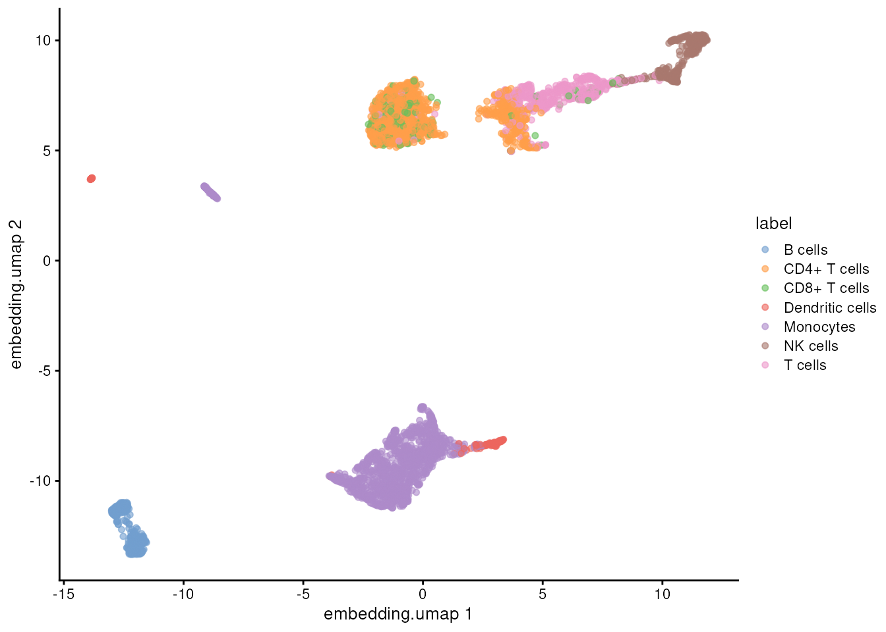
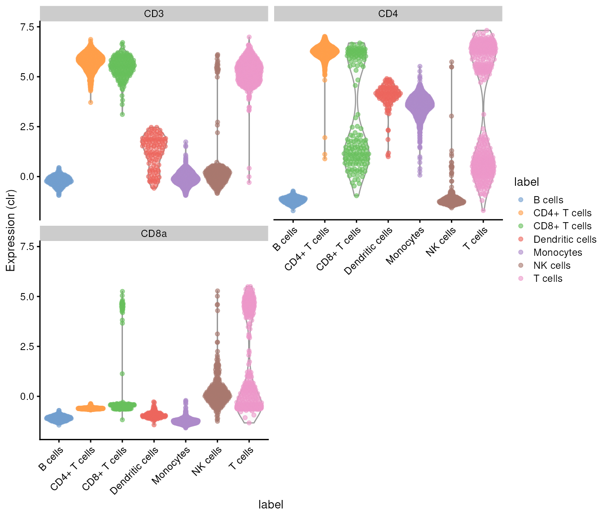
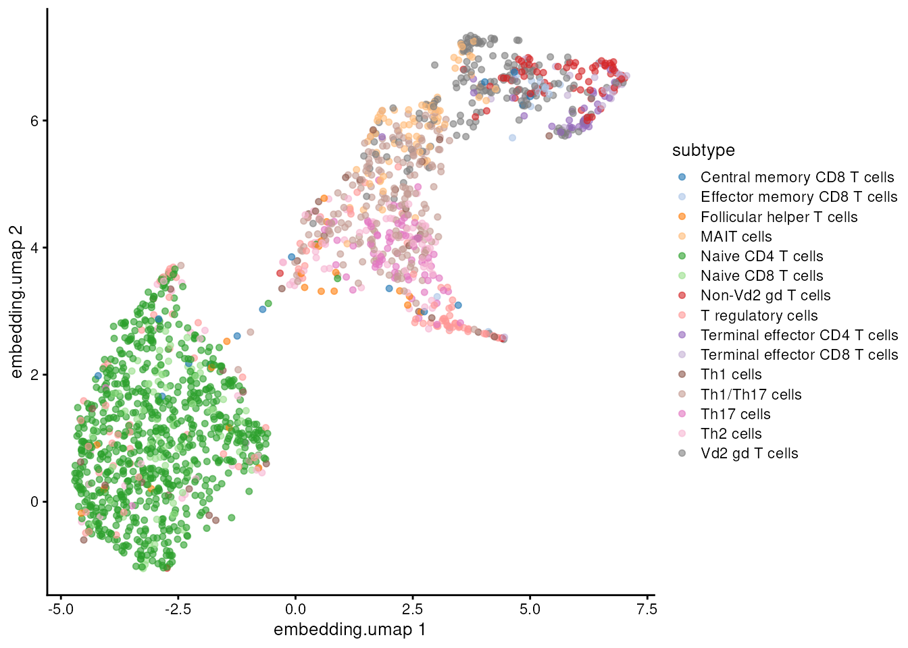

RNA and protein in one object: a single-cell workflow with subsets
Source:vignettes/articles/pbmc-workflow.Rmd
pbmc-workflow.RmdA single-cell analysis makes many versions of the same data: all droplets, the droplets that hold cells, the cells that pass quality control, the genes that vary most, a cell type re-analysed on its own. Usually each becomes a separate object, and each copy has to be kept in step with the others. With CITE-seq, which measures proteins with antibodies next to the RNA, each version also has a protein side.
This article runs a complete analysis of 5,000 peripheral blood
mononuclear cells (PBMCs) from 10x Genomics, measured with RNA and 32
antibodies, and keeps every one of those versions as a
subset of one ExperimentSubset object. A
subset stores which rows and columns of its parent it uses, plus
anything computed for it. It sees its parent’s assays without copying
them. The antibody counts live in an alternative experiment of the main
object, altExp("ADT"), and every subset sees them too, cut
to its own cells.
The purpose of this article is to show how a whole analysis fits in one object, not to give a complete or definitive annotation of PBMCs. The quality-control thresholds, the cell-type labels and the protein checks are simple, common choices; a careful annotation would need more work, such as checking marker genes and proteins for each cluster.
The analysis takes about 20 minutes and downloads about 125 MB the first time it runs.
We store results in two ways, and each step says which it uses:
-
Experiment style.
getSubsetExperiment()takes a subset out as an ordinarySingleCellExperiment; we run any tool on it, andsetSubsetExperiment()stores the result back in the subset: its assays, colData, rowData, reducedDims and metadata replace the subset’s own. -
Direct style. We compute a result ourselves and
store it in the subset with
setSubsetAssay(),colData(),rowData(),reducedDim()oraltExp()withsubsetName =.
The names of the subsets, assays and reduced dimensions follow the MAMS conventions; the last section shows how they map.
The data
We use the 5k PBMC data set with a panel of TotalSeq-B antibodies, processed with Cell Ranger 3.1.0, from the DropletTestFiles package. It has two matrices: the raw matrix, with every barcode of the 10x whitelist, most of them empty, and the filtered matrix, with the droplets that Cell Ranger called as cells. Each has a row for every gene and for every antibody.
library(DropletTestFiles)
# download both matrices (cached after the first time)
rawFile <- getTestFile("tenx-3.1.0-5k_pbmc_protein_v3/1.0.0/raw.tar.gz")
filteredFile <- getTestFile(
"tenx-3.1.0-5k_pbmc_protein_v3/1.0.0/filtered.tar.gz"
)
# unpack them into a temporary folder
dataFolder <- file.path(tempdir(), "pbmc5k")
untar(rawFile, exdir = dataFolder)
untar(filteredFile, exdir = dataFolder)
library(DropletUtils)
# read each matrix, naming the columns by barcode
rawFolder <- file.path(dataFolder, "raw_feature_bc_matrix")
filteredFolder <- file.path(dataFolder, "filtered_feature_bc_matrix")
raw <- read10xCounts(rawFolder, col.names = TRUE)
filtered <- read10xCounts(filteredFolder, col.names = TRUE)
dim(raw)## [1] 33570 6794880
dim(filtered)## [1] 33570 5247We keep the raw matrix as it is, all 6,794,880 barcodes. Most were
never seen in sequencing and have no counts at all: they are entries of
the whitelist, not empty droplets. The matrix is sparse, so such a
barcode costs almost nothing to store, and keeping everything is what
ExperimentSubset is for.
The rows are named by Ensembl ID for genes and by antibody name for proteins. Gene symbols are easier to read, so we use them instead, keeping the ID where a symbol is repeated.
library(scuttle)
# use gene symbols as row names
featureIds <- rowData(raw)$ID
featureSymbols <- rowData(raw)$Symbol
featureNames <- uniquifyFeatureNames(featureIds, featureSymbols)
rownames(raw) <- featureNamesThe Type column of the rowData says whether each row is
a gene or an antibody. splitAltExps() keeps the genes in
the main object and moves the antibodies to an alternative experiment,
which we name ADT (antibody-derived tags). The antibody
names end in _TotalSeqB, which we drop.
## featureTypes
## Antibody Capture Gene Expression
## 32 33538
# genes in the main object, antibodies in the altExp "ADT"
raw <- splitAltExps(raw, featureTypes, ref = "Gene Expression")
altExpNames(raw) <- "ADT"
# shorter antibody names
adt <- altExp(raw, "ADT")
rownames(adt) <- sub("_TotalSeqB$", "", rownames(adt))
altExp(raw, "ADT") <- adt
rownames(adt)## [1] "CD3" "CD4" "CD8a" "CD11b"
## [5] "CD14" "CD15" "CD16" "CD19"
## [9] "CD20" "CD25" "CD27" "CD28"
## [13] "CD34" "CD45RA" "CD45RO" "CD56"
## [17] "CD62L" "CD69" "CD80" "CD86"
## [21] "CD127" "CD137" "CD197" "CD274"
## [25] "CD278" "CD335" "PD-1" "HLA-DR"
## [29] "TIGIT" "IgG1_control" "IgG2a_control" "IgG2b_control"The last three antibodies are isotype controls, which bind nothing in particular; they measure the background.
One object for all droplets
ExperimentSubset() wraps the raw
SingleCellExperiment. Its main assay, counts,
holds every droplet, and its altExp ADT the antibody counts
of every droplet. The cells Cell Ranger found become the first subset,
filtered, chosen by barcode.
library(ExperimentSubset)
# all droplets in the main object
es <- ExperimentSubset(raw)
# the droplets Cell Ranger called as cells
cellBarcodes <- colnames(filtered)
es <- createSubset(es, subsetName = "filtered", cols = cellBarcodes)
es## class: SubsetSingleCellExperiment
## dim: 33538 6794880
## metadata(1): Samples
## assays(1): counts
## rownames(33538): MIR1302-2HG FAM138A ... AC213203.1 FAM231C
## rowData names(3): ID Symbol Type
## colnames(6794880): AAACCCAAGAAACACT-1 AAACCCAAGAAACCAT-1 ...
## TTTGTTGTCTTTGGCT-1 TTTGTTGTCTTTGTCG-1
## colData names(2): Sample Barcode
## reducedDimNames(0):
## mainExpName: Gene Expression
## altExpNames(1): ADT
## subsets(1): filtered
## subsetAssays(1): filteredassay(es, "filtered") returns the counts of the filtered
cells. They are not copied: the subset stores the column positions and
reads the main object’s counts when asked. The same goes for the
antibodies: the subset sees the main object’s ADT, cut to
its cells.
# the antibody counts of the filtered cells, read from the main object
altExpNames(es, subsetName = "filtered")## [1] "ADT"
filteredAdt <- altExp(es, "ADT", subsetName = "filtered")
filteredAdt## class: SingleCellExperiment
## dim: 32 5247
## metadata(1): Samples
## assays(1): counts
## rownames(32): CD3 CD4 ... IgG2a_control IgG2b_control
## rowData names(3): ID Symbol Type
## colnames(5247): AAACCCAAGAGACAAG-1 AAACCCAAGGCCTAGA-1 ...
## TTTGTTGCATTGCCGG-1 TTTGTTGGTCCGGCAT-1
## colData names(0):
## reducedDimNames(0):
## mainExpName: NULL
## altExpNames(0):Finding cells among the droplets
On the main object. es is itself a
SingleCellExperiment, so tools can run on it directly.
singleCellTK’s runDropletQC() runs two other methods from
DropletUtils on every droplet: emptyDrops, which tests each
droplet against the ambient RNA profile, and barcodeRanks,
which finds the knee in the curve of total counts. We leave out its
third method, per-droplet QC metrics, which is slow on 6.8 million
barcodes; we compute QC metrics for the cells below. emptyDrops uses
random sampling, so we set a seed first.
library(singleCellTK)
# test every droplet; set a seed, since emptyDrops samples at random
set.seed(100)
es <- runDropletQC(es, algorithms = c("emptyDrops", "barcodeRanks"))Each method gives its own set of cells: emptyDrops’ calls at a false discovery rate of 1%, and the droplets above barcodeRanks’ knee.
# droplets that emptyDrops calls as cells
dropletFdr <- colData(es)$dropletUtils_emptyDrops_fdr
emptyDropsCell <- !is.na(dropletFdr) & dropletFdr <= 0.01
# droplets above the knee of the barcode-rank curve
kneeCell <- colData(es)$dropletUtils_BarcodeRank_Knee == 1
# droplets that Cell Ranger called as cells
cellRangerCell <- colnames(es) %in% cellBarcodes
table(emptyDrops = emptyDropsCell, cellRanger = cellRangerCell)## cellRanger
## emptyDrops FALSE TRUE
## FALSE 6789425 164
## TRUE 208 5083
table(knee = kneeCell, cellRanger = cellRangerCell)## cellRanger
## knee FALSE TRUE
## FALSE 6789633 2199
## TRUE 0 3048We keep each set of calls as a subset next to Cell Ranger’s
filtered. A subset stores only the positions of its
droplets, so the object barely grows.
# size of the object before
format(object.size(es), units = "MB")## [1] "3412.1 Mb"
# emptyDrops' and barcodeRanks' cells as two more subsets
emptyDropsPositions <- which(emptyDropsCell)
kneePositions <- which(kneeCell)
es <- createSubset(es, subsetName = "emptydrops", cols = emptyDropsPositions)
es <- createSubset(es, subsetName = "barcoderanks", cols = kneePositions)
# size of the object after
format(object.size(es), units = "MB")## [1] "3417.7 Mb"
# the number of genes and cells in each set of calls
subsetDim(es, subsetName = "filtered")## [1] 33538 5247
subsetDim(es, subsetName = "emptydrops")## [1] 33538 5291
subsetDim(es, subsetName = "barcoderanks")## [1] 33538 3048emptyDrops and Cell Ranger mostly agree; the knee is stricter and
keeps fewer cells. We continue with Cell Ranger’s calls, the
filtered subset; the others stay in the object for
comparison.
Quality control of the cells
Experiment style. getSubsetExperiment() returns
the filtered subset as an ordinary
SingleCellExperiment, with the main object’s colData
columns (the droplet QC above) and its ADT, both cut to the
subset’s cells, included.
# the filtered cells as a SingleCellExperiment
filteredCells <- getSubsetExperiment(es, subsetName = "filtered")
filteredCells## class: SingleCellExperiment
## dim: 33538 5247
## metadata(0):
## assays(1): counts
## rownames(33538): MIR1302-2HG FAM138A ... AC213203.1 FAM231C
## rowData names(3): ID Symbol Type
## colnames(5247): AAACCCAAGAGACAAG-1 AAACCCAAGGCCTAGA-1 ...
## TTTGTTGCATTGCCGG-1 TTTGTTGGTCCGGCAT-1
## colData names(9): Sample Barcode ... dropletUtils_BarcodeRank_Knee
## dropletUtils_BarcodeRank_Inflection
## reducedDimNames(0):
## mainExpName: Gene Expression
## altExpNames(1): ADTsingleCellTK’s runCellQC() computes per-cell QC metrics,
including the percentage of counts from mitochondrial genes, and finds
doublets with scDblFinder. Our row names are gene symbols, so we say so.
scDblFinder samples at random; runCellQC() sets its own
seed (seed = 12345 by default), so the results are the same
on every run.
# QC metrics and doublet calls for each cell
filteredCells <- runCellQC(filteredCells,
algorithms = c("QCMetrics", "scDblFinder"),
mitoIDType = "symbol")setSubsetExperiment() stores what
runCellQC() added in the filtered subset. The
counts and the antibody counts are unchanged, so they are not copied,
and neither are the main object’s colData columns.
# store the QC results in the subset
es <- setSubsetExperiment(es, subsetName = "filtered", value = filteredCells)
colnames(colData(es, subsetName = "filtered"))## [1] "sum" "detected"
## [3] "percent.top_50" "percent.top_100"
## [5] "percent.top_200" "percent.top_500"
## [7] "mito_sum" "mito_detected"
## [9] "mito_percent" "total"
## [11] "scDblFinder_sample" "scDblFinder_doublet_call"
## [13] "scDblFinder_doublet_score" "scDblFinder_weighted"
## [15] "scDblFinder_cxds_score"Removing ambient RNA
Direct style. decontX’s decontX() estimates how
much of each cell’s counts comes from ambient RNA, the free-floating RNA
in every droplet, and removes it. It estimates the ambient profile from
the cells themselves. Like runCellQC(),
decontX() sets its own seed by default.
library(decontX)
# counts of the cells
cellCounts <- assay(es, "filtered")
# estimate and remove the ambient RNA
decontamination <- decontX(cellCounts)The decontaminated counts become an assay of the
filtered subset, and the estimated contamination becomes a
colData column.
# store the decontaminated counts in the subset
decontaminatedCounts <- decontamination$decontXcounts
es <- setSubsetAssay(es, subsetName = "filtered",
inputMatrix = decontaminatedCounts,
subsetAssayName = "decontaminated")
# store each cell's contamination with its other QC columns
colData(es, subsetName = "filtered")$contamination <-
decontamination$contaminationKeeping high-quality cells
These cells have more mitochondrial counts than many PBMC data sets: half of them have more than 9% (the median below). Most cells have up to about 15%, and a smaller group, probably damaged cells, has far more. We keep cells that have at least 300 detected genes, at most 15% of counts from mitochondrial genes, at most 30% contamination, and that scDblFinder calls singlets.
# the QC columns of the filtered cells
filteredData <- colData(es, subsetName = "filtered")
summary(filteredData$mito_percent)## Min. 1st Qu. Median Mean 3rd Qu. Max.
## 0.000 7.230 8.995 14.786 13.335 93.907
# each QC rule
enoughGenes <- filteredData$detected >= 300
lowMito <- filteredData$mito_percent <= 15
lowContamination <- filteredData$contamination <= 0.3
singlet <- filteredData$scDblFinder_doublet_call == "Singlet"
# cells that pass all of them
keepCells <- enoughGenes & lowMito & lowContamination & singlet
table(keepCells)## keepCells
## FALSE TRUE
## 1582 3665The new subset, clean, is made from the decontaminated
counts: its parentAssay is
"filtered/decontaminated", the assay
decontaminated stored in the subset filtered.
It sees the antibody counts of its cells as well, still from the main
object.
# the high-quality cells, from the decontaminated counts
cellsToKeep <- which(keepCells)
es <- createSubset(es, subsetName = "clean", cols = cellsToKeep,
parentAssay = "filtered/decontaminated")
subsetDim(es, subsetName = "clean")## [1] 33538 3665Clustering
Direct style. We follow a standard workflow with the
scrapper package, storing each result in the clean subset
or in its subset of variable genes.
Normalisation. Counts are divided by each cell’s
size factor and log-transformed. delayed = FALSE computes
the values now, rather than each time they are read.
library(scrapper)
# decontaminated counts of the clean cells
cleanCounts <- assay(es, "clean")
# size factors from each cell's total, then log-normalised values
cellTotals <- colSums(cleanCounts)
sizeFactors <- centerSizeFactors(cellTotals)
lognormalized <- normalizeCounts(cleanCounts, sizeFactors, delayed = FALSE)
es <- setSubsetAssay(es, subsetName = "clean",
inputMatrix = lognormalized,
subsetAssayName = "lognormalized")Variable genes. We choose the 2,000 genes whose
expression varies most across the clean cells, and keep them as a subset
of rows, clean.variable, made from the log-normalised
values.
# variance of each gene, and the 2,000 most variable
geneVariances <- modelGeneVariances(lognormalized)
geneResiduals <- geneVariances$statistics$residuals
variableGenes <- chooseHighlyVariableGenes(geneResiduals, top = 2000)
# the variable genes as a subset of rows
es <- createSubset(es, subsetName = "clean.variable", rows = variableGenes,
parentAssay = "clean/lognormalized")
variableLognormalized <- assay(es, "clean.variable")
dim(variableLognormalized)## [1] 2000 3665Scaling. Each variable gene’s log-normalised values
are turned into z-scores across the clean cells: mean 0 and standard
deviation 1. Only the variable genes are scaled: only they go into the
PCA, and z-scores, which are rarely zero, take far more memory than the
sparse log-normalised values. The z-scores are stored in the
clean.variable subset.
# z-scores of each variable gene; scale() works on columns, so we
# transpose to one column per gene and back
variableDense <- as.matrix(variableLognormalized)
genesByColumn <- t(variableDense)
scaledByColumn <- scale(genesByColumn)
scaled <- t(scaledByColumn)
es <- setSubsetAssay(es, subsetName = "clean.variable",
inputMatrix = scaled,
subsetAssayName = "scaled")PCA, clusters and UMAP. We keep the first 25
principal components (scrapper’s default) of the z-scores. They describe
the clean cells, so we store them, the clusters and the UMAP in the
clean subset. runPca() returns them with one
column per cell, the layout the other scrapper functions take; reduced
dimensions are stored with one row per cell, so we transpose them for
storing. scrapper’s PCA, clustering and UMAP use fixed seeds by default,
so they give the same results on every run.
# principal components of the z-scores of the variable genes
pca <- runPca(scaled)
cellPcs <- t(pca$components)
reducedDim(es, "reduction.pca", subsetName = "clean") <- cellPcs
# a nearest-neighbour graph of the cells, and its clusters
neighbourGraph <- buildSnnGraph(pca$components)
clusters <- clusterGraph(neighbourGraph)
# a two-dimensional UMAP embedding
umap <- runUmap(pca$components)
reducedDim(es, "embedding.umap", subsetName = "clean") <- umapAnnotating cell types
Direct style. SingleR labels each cell with the most similar cell type in a reference, here the Monaco immune reference from celldex.
library(SingleR)
library(celldex)
# the reference, and the predicted main cell type of each clean cell
monaco <- MonacoImmuneData()
cleanLognormalized <- assay(es, "clean/lognormalized")
predictions <- SingleR(test = cleanLognormalized, ref = monaco,
labels = monaco$label.main)The clusters and labels go into the clean subset’s
colData, and a few known marker genes are flagged in its rowData.
# clusters and labels in the subset's colData
colData(es, subsetName = "clean")$cluster <- clusters$membership
colData(es, subsetName = "clean")$label <- predictions$labels
table(predictions$labels)##
## B cells CD4+ T cells CD8+ T cells Dendritic cells Monocytes
## 278 1065 173 116 1203
## NK cells T cells
## 315 515
# marker genes flagged in the subset's rowData
markers <- c("CD3E", "CD4", "CD8A", "MS4A1", "CD14", "FCGR3A", "NKG7",
"LYZ", "PPBP")
cleanGenes <- subsetRownames(es, subsetName = "clean")
rowData(es, subsetName = "clean")$marker <- cleanGenes %in% markersWe take the subset out again to plot it with scater.
library(scater)
# the clean cells, coloured by cell type
cleanCells <- getSubsetExperiment(es, subsetName = "clean")
plotReducedDim(cleanCells, dimred = "embedding.umap", colour_by = "label")
Removing ambient protein
Direct style. Antibody counts have a background too:
antibodies that float free in the droplet or bind where they shouldn’t.
decontX’s decontPro() estimates the background of each
antibody in each cell and removes it. It needs a cell type for each
cell, for which we use the RNA clusters, numbered from 1 as
decontPro() expects.
# the antibody counts of the clean cells, still read from the main object
cleanAdt <- altExp(es, "ADT", subsetName = "clean")
cleanAdtCounts <- counts(cleanAdt)
# the RNA clusters as cell types, numbered from 1
clusterFactor <- factor(clusters$membership)
cellTypes <- as.integer(clusterFactor)decontPro() can also learn the background from droplets
that hold no cell: it uses each antibody’s share of their counts. The
main object has every droplet, so they are at hand: we use the droplets
that neither Cell Ranger nor emptyDrops called as cells but that have
some antibody counts. Droplets that only one of them calls may hold a
cell, whose antibodies aren’t background.
# the antibody counts of every droplet, and each droplet's total
allAdt <- altExp(es, "ADT")
allAdtCounts <- counts(allAdt)
adtTotals <- colSums(allAdtCounts)
# droplets that aren't cells but have antibody counts
notCell <- !cellRangerCell & !emptyDropsCell
isAmbient <- notCell & adtTotals > 0
sum(isAmbient)## [1] 317164
ambientCounts <- allAdtCounts[, isAmbient]decontPro() fits a model to the counts of the clean
cells, which takes a few minutes and prints its progress, hidden here.
It sets its own seed, so the results are the same on every run.
# estimate and remove the background of each antibody in each cell
proteinDecontamination <- decontPro(cleanAdtCounts, cellTypes,
ambient_counts = ambientCounts)
# the decontaminated counts, with the antibody and cell names
decontaminatedAdt <- proteinDecontamination$decontaminated_counts
dimnames(decontaminatedAdt) <- dimnames(cleanAdtCounts)The decontaminated antibody counts become an assay,
decontPro, of the clean subset’s
ADT. We add it to the object altExp() returned
and store that back with
altExp(es, "ADT", subsetName = "clean") <-. The subset
stores only what is new: counts is unchanged, so it stays
linked to the main object’s, and the object grows by about the size of
the new matrix.
# size of the object before
format(object.size(es), units = "MB")## [1] "3675.1 Mb"
# add the decontaminated counts to the clean cells' ADT and store it
assay(cleanAdt, "decontPro") <- decontaminatedAdt
altExp(es, "ADT", subsetName = "clean") <- cleanAdt
# size of the object after, and of the new matrix
format(object.size(es), units = "MB")## [1] "3676.6 Mb"
format(object.size(decontaminatedAdt), units = "MB")## [1] "1.2 Mb"Normalisation. Antibody counts are commonly
normalised with the centred log ratio (CLR): log-transform each count,
then subtract the mean of the cell’s log counts, which takes out
differences in each cell’s total. We store it as a second assay,
clr, of the same ADT.
# log counts, minus each cell's mean log count
logAdt <- log1p(decontaminatedAdt)
cellMeans <- colMeans(logAdt)
clrAdt <- sweep(logAdt, MARGIN = 2, cellMeans)
# store it next to decontPro
assay(cleanAdt, "clr") <- clrAdt
altExp(es, "ADT", subsetName = "clean") <- cleanAdt
# the clean cells' ADT now has three assays
storedAdt <- altExp(es, "ADT", subsetName = "clean")
assayNames(storedAdt)## [1] "counts" "decontPro" "clr"Checking the cell labels with protein
The cell types came from RNA alone. The antibodies give an
independent check: T cells should carry CD3, CD4+ T cells CD4 and CD8+ T
cells CD8a. getSubsetExperiment() returns the clean cells
with their ADT, including the two new assays.
library(ggplot2)
# the clean cells, with their ADT
cleanCells <- getSubsetExperiment(es, subsetName = "clean")
cleanProtein <- altExp(cleanCells, "ADT")
# each cell's RNA label, next to its protein values
cleanProtein$label <- cleanCells$label
# CLR values by cell type, with the labels turned to fit
proteinPlot <- plotExpression(cleanProtein,
features = c("CD3", "CD4", "CD8a"),
x = "label", assay.type = "clr",
colour_by = "label")
slantedText <- element_text(angle = 45, hjust = 1)
slantedLabels <- theme(axis.text.x = slantedText)
proteinPlot + slantedLabels
# median CD3 protein in each cell type
cd3 <- assay(cleanProtein, "clr")["CD3", ]
tapply(cd3, cleanProtein$label, median)## B cells CD4+ T cells CD8+ T cells Dendritic cells Monocytes
## -0.21100149 5.80974283 5.52746881 1.43082349 -0.09437538
## NK cells T cells
## 0.10469913 5.27590801CD3 is high in all three T-cell labels and near zero in B cells and monocytes, and CD4+ T cells carry CD4 but not CD8a. The cells labelled just T cells split into those that carry CD4 and those that carry CD8a. The protein also shows what RNA missed: part of the cells labelled CD8+ T cells carry CD4 and not CD8a. Monocytes and dendritic cells carry some CD4 too, as they do in blood. A careful annotation would use both, for example by clustering on RNA and protein together.
Re-analysing the T cells
Experiment style. T cells are the largest group. We make
them a subset of clean, then repeat the analysis on them
alone.
# the clean cells labelled as T cells
tcellLabels <- c("CD4+ T cells", "CD8+ T cells", "T cells")
isTcell <- predictions$labels %in% tcellLabels
tcellPositions <- which(isTcell)
es <- createSubset(es, subsetName = "tcells", cols = tcellPositions,
parentAssay = "clean")
subsetDim(es, subsetName = "tcells")## [1] 33538 1753The new subset already sees the assays of clean, and
those clean sees in turn, linked rather than copied:
subsetAssayNames(es, subsetName = "tcells")## [1] "counts" "decontaminated" "lognormalized"A cell’s log-normalised values depend on its own counts and size
factor, so the T cells reuse lognormalized from
clean, as subclustering usually does. The variable genes
and their z-scores depend on which cells are included, so we compute
them again on the T cells.
# the T cells as a SingleCellExperiment, with the linked assays
tcells <- getSubsetExperiment(es, subsetName = "tcells")
assayNames(tcells)## [1] "decontaminated" "counts" "lognormalized"
# their ADT, with the counts, decontPro and clr of clean
tcellAdtSeen <- altExp(tcells, "ADT")
assayNames(tcellAdtSeen)## [1] "counts" "decontPro" "clr"
# the 2,000 genes that vary most among T cells
tcellLognormalized <- assay(tcells, "lognormalized")
tcellVariances <- modelGeneVariances(tcellLognormalized)
tcellResiduals <- tcellVariances$statistics$residuals
tcellVariableGenes <- chooseHighlyVariableGenes(tcellResiduals, top = 2000)
# z-scores of the T cells' variable genes, across the T cells only
tcellVariableLognormalized <- tcellLognormalized[tcellVariableGenes, ]
tcellDense <- as.matrix(tcellVariableLognormalized)
tcellGenesByColumn <- t(tcellDense)
tcellScaledByColumn <- scale(tcellGenesByColumn)
tcellScaled <- t(tcellScaledByColumn)
# principal components, stored with one row per cell
tcellPca <- runPca(tcellScaled)
tcellPcs <- t(tcellPca$components)
reducedDim(tcells, "reduction.pca") <- tcellPcs
# clusters of the T cells
tcellGraph <- buildSnnGraph(tcellPca$components)
tcellClusters <- clusterGraph(tcellGraph)
tcells$cluster <- tcellClusters$membership
# a UMAP embedding of the T cells
tcellUmap <- runUmap(tcellPca$components)
reducedDim(tcells, "embedding.umap") <- tcellUmap
# the T-cell part of the reference, so every cell gets a T-cell subtype
isTcellReference <- monaco$label.main %in% tcellLabels
tcellReference <- monaco[, isTcellReference]
# finer T-cell subtypes
tcellPredictions <- SingleR(test = tcellLognormalized, ref = tcellReference,
labels = tcellReference$label.fine)
tcells$subtype <- tcellPredictions$labels
table(tcells$subtype)##
## Central memory CD8 T cells Effector memory CD8 T cells
## 15 17
## Follicular helper T cells MAIT cells
## 21 73
## Naive CD4 T cells Naive CD8 T cells
## 726 79
## Non-Vd2 gd T cells T regulatory cells
## 80 103
## Terminal effector CD4 T cells Terminal effector CD8 T cells
## 29 25
## Th1 cells Th1/Th17 cells
## 35 192
## Th17 cells Th2 cells
## 76 94
## Vd2 gd T cells
## 188setSubsetExperiment() stores the reduced dimensions and
colData columns we added in the tcells subset. The assays
and the ADT are unchanged, so they stay linked and nothing
is copied.
# store the T-cell results
es <- setSubsetExperiment(es, subsetName = "tcells", value = tcells)As for the clean cells, the T cells’ variable genes become a subset
of rows, tcells.variable, which stores their z-scores.
# the T cells' variable genes, and their z-scores
es <- createSubset(es, subsetName = "tcells.variable",
rows = tcellVariableGenes,
parentAssay = "tcells/lognormalized")
es <- setSubsetAssay(es, subsetName = "tcells.variable",
inputMatrix = tcellScaled,
subsetAssayName = "scaled")clean.variable and tcells.variable each
store their own scaled: an assay stored in one subset
doesn’t clash with one of the same name in another.
# the T cells, coloured by subtype
tcellCells <- getSubsetExperiment(es, subsetName = "tcells")
plotReducedDim(tcellCells, dimred = "embedding.umap", colour_by = "subtype")
Removing ambient protein in the T cells alone
decontPro() fits each antibody’s background and its true
signal to the cell types it is given. The T cells now have clusters of
their own, finer than the clean cells’ clusters, so we run it again on
the T cells alone, with those clusters and the same ambient
droplets.
# the T cells' antibody counts, and their clusters numbered from 1
tcellAdt <- altExp(es, "ADT", subsetName = "tcells")
tcellAdtCounts <- counts(tcellAdt)
tcellClusterFactor <- factor(tcells$cluster)
tcellTypes <- as.integer(tcellClusterFactor)
# estimate and remove the background, on the T cells only
tcellProteinDecontamination <- decontPro(tcellAdtCounts, tcellTypes,
ambient_counts = ambientCounts)
tcellDecontaminatedAdt <-
tcellProteinDecontamination$decontaminated_counts
dimnames(tcellDecontaminatedAdt) <- dimnames(tcellAdtCounts)
# CLR of the new values
tcellLogAdt <- log1p(tcellDecontaminatedAdt)
tcellCellMeans <- colMeans(tcellLogAdt)
tcellClrAdt <- sweep(tcellLogAdt, MARGIN = 2, tcellCellMeans)
# both replace the ones the T cells see from clean
assay(tcellAdt, "decontPro") <- tcellDecontaminatedAdt
assay(tcellAdt, "clr") <- tcellClrAdtThe T cells see decontPro and clr linked
from clean. Storing values of their own under the same
names would break that link without saying so, so it is an error, which
names the linked assays:
# store the T cells' own decontPro and clr
altExp(es, "ADT", subsetName = "tcells") <- tcellAdt## Error in `.checkUnlinked()`:
## ! 'ADT/decontPro' in subset 'tcells' is linked to altExp 'ADT' of subset 'clean' and 'ADT/clr' to altExp 'ADT' of subset 'clean'. Set unlink = TRUE or unlink = c("ADT/decontPro", "ADT/clr") to store separate 'ADT/decontPro' and 'ADT/clr' computed on the cells of 'tcells'.unlink names the altExp assays to unlink, as
"ADT/decontPro". The T cells then store their own
decontPro and clr, with a message for each,
such as “Subset ‘tcells’ now stores its own ‘ADT/decontPro’, unlinked
from altExp ‘ADT’ of subset ‘clean’.” Subsets made from the T cells will
use these; clean’s are unchanged, and counts
stays linked to the main object.
The whole analysis in one object
subsetSummary() lists every subset, what it was made
from, the assays and reduced dimensions it stores, and the altExps it
sees. AltExperiments doesn’t say whether a subset stores
any assays of an altExp: clean and tcells
store their own decontPro and clr, the others
none.
subsetSummary(es)## Main assay(s):
## counts
##
## Subset(s):## Name Dim
## 1 filtered 33538, 5247
## 2 emptydrops 33538, 5291
## 3 barcoderanks 33538, 3048
## 4 clean 33538, 3665
## 5 clean.variable 2000, 3665
## 6 tcells 33538, 1753
## 7 tcells.variable 2000, 1753
## Parent
## 1 counts
## 2 counts
## 3 counts
## 4 filtered/decontaminated -> filtered -> counts
## 5 clean/lognormalized -> clean -> filtered/decontaminated -> filtered -> counts
## 6 clean -> filtered/decontaminated -> filtered -> counts
## 7 tcells/lognormalized -> tcells -> clean -> filtered/decontaminated -> filtered -> counts
## Assays AltExperiments ReducedDims
## 1 decontaminated ADT
## 2 ADT
## 3 ADT
## 4 lognormalized ADT reduction.pca, embedding.umap
## 5 scaled ADT
## 6 ADT reduction.pca, embedding.umap
## 7 scaled ADTAll of this lives in one object. The subsets store row and column
positions, and only what was computed for them:
decontaminated in filtered;
lognormalized, and decontPro and
clr of ADT, in clean;
scaled in the two variable-gene subsets; the T cells’ own
decontPro and clr; and the colData, rowData
and reduced dimensions added along the way. A linked assay, such as the
T cells’ lognormalized or their antibody
counts, is only built when it is read.
# the whole object
format(object.size(es), units = "MB")## [1] "3710.1 Mb"
# the RNA counts of all barcodes, stored once
allCounts <- assay(es, "counts")
format(object.size(allCounts), units = "MB")## [1] "761.9 Mb"
# the same counts without the barcode names
unnamedCounts <- allCounts
dimnames(unnamedCounts) <- NULL
format(object.size(unnamedCounts), units = "MB")## [1] "189.5 Mb"The counts themselves are small: a barcode with no counts takes 4
bytes. Most of the object’s size is the 6.8 million barcode names, in
the column names of the counts and of ADT and in the
colData, followed by the droplet QC columns that
runDropletQC() added for every barcode.
object.size() counts each name again in every vector that
holds it, so it overstates the memory the object uses.
Kept as separate objects instead, the three sets of cell calls, the clean cells and the T cells would each carry their own copy of the RNA and antibody counts, and the T cells another copy of the log-normalised values.
How this maps to MAMS
MAMS (Matrix
and Analysis Metadata Standards) describes the matrices and annotations
a single-cell analysis produces. The names used here follow its
suggested values where it has them (filtered,
clean, variable, counts,
decontaminated, lognormalized,
scaled, reduction, embedding);
emptydrops, barcoderanks and
tcells are our own names for subsets, ADT is
the usual name for antibody counts, and decontPro and
clr are named after the methods.
| In this article | ExperimentSubset | MAMS |
|---|---|---|
filtered, emptydrops,
barcoderanks, clean, tcells
|
subsets of columns | obs_subset |
clean.variable, tcells.variable
|
subsets of rows |
feature_subset (variable) |
counts, decontaminated,
lognormalized, scaled
|
assays | processing |
ADT |
an altExp, seen by every subset | a matrix with analyte protein
|
decontPro, clr of ADT
|
assays of the altExp |
processing (decontaminated,
lognormalized) |
reduction.pca, embedding.umap
|
reducedDims |
processing (reduction,
embedding) |
parentAssay,
e.g. "filtered/decontaminated"
|
the assay or subset a subset was made from | parent_id |
| a subset made from its parent’s rows or columns | createSubset() |
parent_relationship (subset) |
Session information
## R version 4.6.1 (2026-06-24)
## Platform: x86_64-pc-linux-gnu
## Running under: Ubuntu 24.04.5 LTS
##
## Matrix products: default
## BLAS: /usr/lib/x86_64-linux-gnu/openblas-pthread/libblas.so.3
## LAPACK: /usr/lib/x86_64-linux-gnu/openblas-pthread/libopenblasp-r0.3.26.so; LAPACK version 3.12.0
##
## locale:
## [1] LC_CTYPE=en_US.UTF-8 LC_NUMERIC=C
## [3] LC_TIME=en_US.UTF-8 LC_COLLATE=en_US.UTF-8
## [5] LC_MONETARY=en_US.UTF-8 LC_MESSAGES=en_US.UTF-8
## [7] LC_PAPER=en_US.UTF-8 LC_NAME=C
## [9] LC_ADDRESS=C LC_TELEPHONE=C
## [11] LC_MEASUREMENT=en_US.UTF-8 LC_IDENTIFICATION=C
##
## time zone: Etc/UTC
## tzcode source: system (glibc)
##
## attached base packages:
## [1] stats4 stats graphics grDevices utils datasets methods
## [8] base
##
## other attached packages:
## [1] scater_1.41.3 ggplot2_4.0.3
## [3] celldex_1.23.0 SingleR_2.15.4
## [5] scrapper_1.7.11 decontX_1.11.2
## [7] singleCellTK_2.23.6 DelayedArray_0.39.8
## [9] SparseArray_1.13.4 S4Arrays_1.13.2
## [11] abind_1.4-8 Matrix_1.7-6
## [13] ExperimentSubset_1.23.50 TreeSummarizedExperiment_2.21.0
## [15] Biostrings_2.81.9 XVector_0.53.0
## [17] SpatialExperiment_1.23.0 scuttle_1.23.2
## [19] DropletUtils_1.33.2 SingleCellExperiment_1.35.2
## [21] SummarizedExperiment_1.43.0 Biobase_2.73.2
## [23] GenomicRanges_1.65.4 Seqinfo_1.3.2
## [25] IRanges_2.47.5 S4Vectors_0.51.10
## [27] BiocGenerics_0.59.12 generics_0.1.4
## [29] MatrixGenerics_1.25.0 matrixStats_1.5.0
## [31] DropletTestFiles_1.23.0
##
## loaded via a namespace (and not attached):
## [1] fs_2.1.0 bitops_1.1-0
## [3] httr_1.4.9 RColorBrewer_1.1-3
## [5] doParallel_1.0.17 alabaster.base_1.13.5
## [7] tools_4.6.1 R6_2.6.1
## [9] HDF5Array_1.41.3 lazyeval_0.2.3
## [11] rhdf5filters_1.25.5 GetoptLong_1.1.1
## [13] sp_2.2-4 withr_3.0.3
## [15] gridExtra_2.3.1 progressr_1.1.0
## [17] cli_3.6.6 textshaping_1.0.5
## [19] labeling_0.4.3 alabaster.se_1.13.1
## [21] eds_1.15.0 sass_0.4.10
## [23] S7_0.2.2 QuickJSR_1.11.0
## [25] pkgdown_2.2.1 Rsamtools_2.29.0
## [27] systemfonts_1.3.2 yulab.utils_0.2.5
## [29] StanHeaders_2.39.1 dbscan_1.2.7
## [31] R.utils_2.13.0 parallelly_1.48.0
## [33] limma_3.99.4 RSQLite_3.53.3
## [35] shape_1.4.6.1 BiocIO_1.23.3
## [37] combinat_0.0-9 dplyr_1.2.1
## [39] inline_0.3.21 loo_2.10.1
## [41] ggbeeswarm_0.7.3 R.methodsS3_1.8.2
## [43] lifecycle_1.0.5 yaml_2.3.12
## [45] edgeR_4.99.12 rhdf5_2.57.20
## [47] BiocFileCache_3.3.2 grid_4.6.1
## [49] blob_1.3.0 dqrng_0.4.1
## [51] ExperimentHub_3.3.2 crayon_1.5.3
## [53] lattice_0.23-1 cowplot_1.2.0
## [55] beachmat_2.29.3 cigarillo_1.3.1
## [57] annotate_1.91.0 KEGGREST_1.53.6
## [59] magick_2.9.1 pillar_1.11.1
## [61] knitr_1.52 ComplexHeatmap_2.29.0
## [63] rjson_0.2.23 xgboost_3.2.1.1
## [65] future.apply_1.21.0 codetools_0.2-20
## [67] glue_1.8.1 V8_8.2.1
## [69] data.table_1.18.6.1 gypsum_1.9.0
## [71] spam_2.11-4 vctrs_0.7.3
## [73] png_0.1-9 treeio_1.37.1
## [75] gtable_0.3.6 cachem_1.1.0
## [77] xfun_0.62 GSVAdata_1.49.2
## [79] iterators_1.0.14 statmod_1.5.2
## [81] bluster_1.23.1 nlme_3.1-171
## [83] bit64_4.8.6 alabaster.ranges_1.13.1
## [85] filelock_1.0.3 rstan_2.32.7
## [87] GenomeInfoDb_1.49.1 bslib_0.12.0
## [89] irlba_2.4.1 vipor_0.4.7
## [91] otel_0.2.0 colorspace_2.1-4
## [93] DBI_1.3.0 tidyselect_1.2.1
## [95] bit_4.6.0 compiler_4.6.1
## [97] curl_8.1.0 httr2_1.3.0
## [99] graph_1.91.0 BiocNeighbors_2.7.3
## [101] h5mread_1.5.3 desc_1.4.3
## [103] rtracklayer_1.73.0 scales_1.4.0
## [105] rappdirs_0.3.4 stringr_1.6.0
## [107] digest_0.6.39 alabaster.matrix_1.13.4
## [109] rmarkdown_2.32 htmltools_0.5.9
## [111] pkgconfig_2.0.3 sparseMatrixStats_1.25.0
## [113] dbplyr_2.6.0 fastmap_1.2.0
## [115] rlang_1.3.0 GlobalOptions_0.1.4
## [117] htmlwidgets_1.6.4 UCSC.utils_1.9.0
## [119] DelayedMatrixStats_1.35.0 farver_2.1.2
## [121] jquerylib_0.1.4 jsonlite_2.0.0
## [123] BiocParallel_1.47.0 R.oo_1.27.1
## [125] BiocSingular_1.29.2 RCurl_1.98-1.20
## [127] magrittr_2.0.5 dotCall64_1.2
## [129] Rhdf5lib_2.1.0 Rcpp_1.1.2
## [131] ape_5.8-1 viridis_0.6.5
## [133] reticulate_1.47.0 alabaster.schemas_1.13.0
## [135] stringi_1.8.9 MCMCprecision_0.4.2
## [137] MASS_7.3-66 AnnotationHub_4.3.3
## [139] plyr_1.8.9 pkgbuild_1.4.8
## [141] parallel_4.6.1 listenv_1.1.0
## [143] ggrepel_0.9.8 scDblFinder_1.27.12
## [145] circlize_0.4.18 igraph_2.3.4
## [147] reshape2_1.4.5 ScaledMatrix_1.21.0
## [149] rstantools_2.7.1 BiocVersion_3.24.0
## [151] XML_3.99-0.25 evaluate_1.0.5
## [153] SeuratObject_5.4.0 RcppParallel_6.2.1
## [155] BiocManager_1.30.27 foreach_1.5.2
## [157] tidyr_1.3.2 purrr_1.2.2
## [159] future_1.80.0 clue_0.3-68
## [161] BiocBaseUtils_1.15.1 rsvd_1.0.6
## [163] xtable_1.8-8 restfulr_0.0.17
## [165] tidytree_0.4.8 viridisLite_0.4.3
## [167] ragg_1.5.2 tibble_3.3.1
## [169] memoise_2.0.1 beeswarm_0.4.0
## [171] AnnotationDbi_1.75.2 GenomicAlignments_1.49.2
## [173] cluster_2.1.8.3 globals_0.20.0
## [175] GSEABase_1.75.0